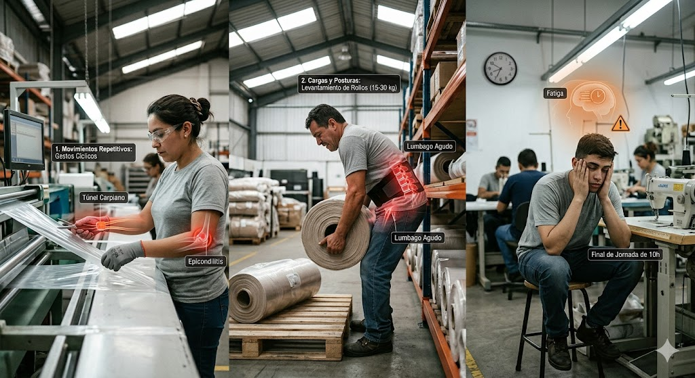
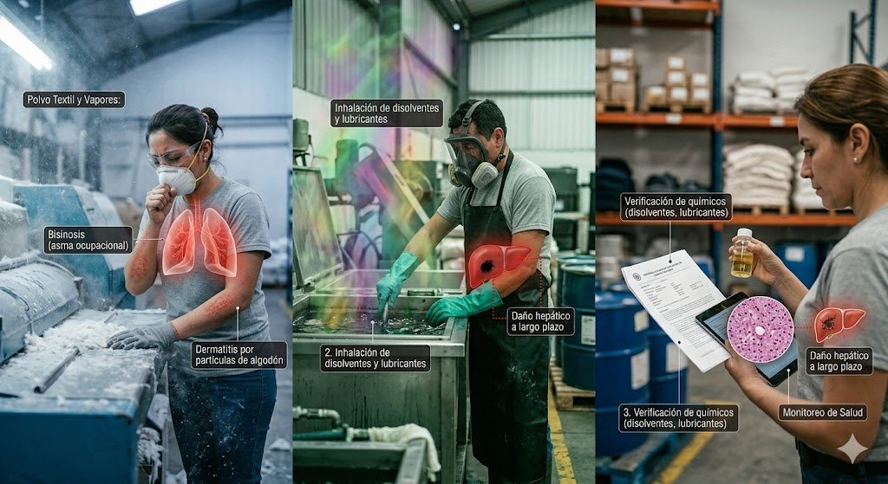

Análisis de Factores de Riesgo Ocupacional
Evaluación Técnica de Salud en el Trabajo • Industria Textil S.A.C.

1. Factores Físicos
Ruido y Vibraciones:
- Niveles > 85 dB en remalladoras causan hipoacusia irreversible.
- Vibraciones mano-brazo provocan síndrome de dedos blancos y artrosis.
Iluminación y Temperatura:
- Iluminación deficiente causa astenopia y errores de corte.
- Estrés térmico (35-40°C) en planchado causa golpes de calor y deshidratación.

2. Factores Mecánicos
Cortes y Amputaciones:
- Cuchillas en movimiento constante causan laceraciones profundas y pérdida de falanges.
Atrapamientos y Quemaduras:
- Fracturas por prensas neumáticas y quemaduras de 3er grado por planchas a 220°C.

3. Factores Ergonómicos
Movimientos Repetitivos:
- Túnel carpiano, tendinitis de De Quervain y epicondilitis por gestos cíclicos.
Cargas y Posturas:
- Levantamiento de rollos (15-30 kg) causa hernias inguinales y lumbago agudo.
- Fatiga por jornadas de 10h reduce tiempos de reacción y aumenta accidentes.

4. Factores Psicosociales
Estrés y Cronodisrupción:
- Ansiedad por alta demanda y presión de clientes europeos.
- Turnos rotativos causan cronodisrupción, obesidad y mayor riesgo nocturno.
Carga Mental:
- Agotamiento emocional (Burnout) y fatiga por atención constante en calidad.

5. Factores Químicos
Polvo Textil y Vapores:
- Bisinosis (asma ocupacional) y dermatitis por partículas de algodón.
- Daño hepático a largo plazo por inhalación de disolventes y lubricantes.

6. Factores Biológicos
Hongos y Bacterias:
- Dermatomicosis e infecciones respiratorias (aspergilosis) en almacenes húmedos.